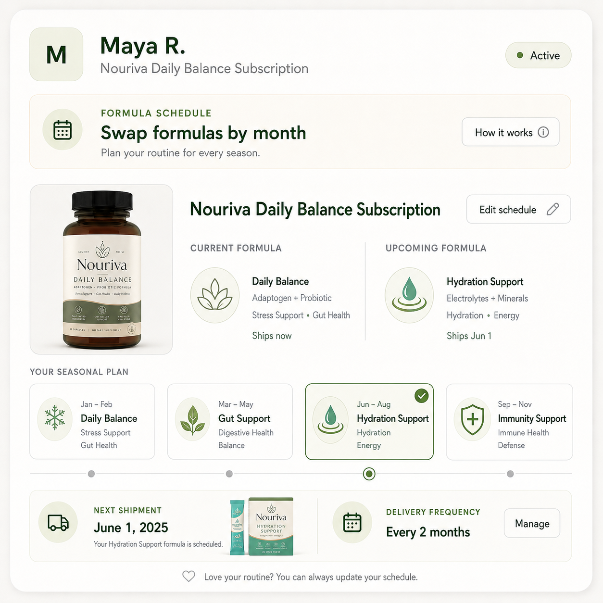
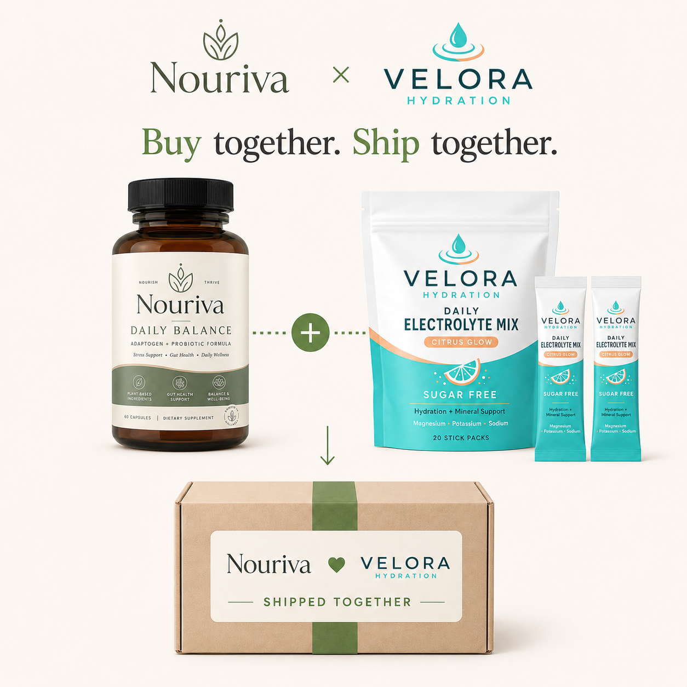
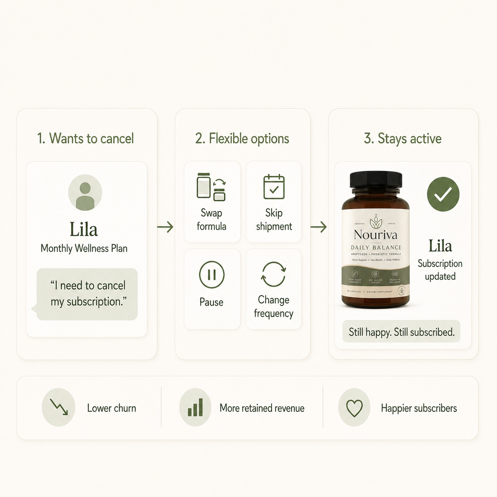

Your Wellness Routine Changes With the Season. Your Subscription Should Too.
Inside how health and wellness brands use Rebillia to keep subscribers active through every product swap, dosage change, address update, and routine adjustment.
One subscription that adapts to every format, dosage, and routine change.
A customer's vitamin stack in January might need a different dosage by summer. A supplement subscriber managing sensitive skin might need to swap to a fragrance-free formula overnight. A wellness brand's customer might pause for travel, then resume from a different address. Another might add a second product to their regimen mid-month.
Supplement and wellness subscriptions are built around habits, routines, and health needs. Those habits change constantly. Most subscription systems are not built to move with them.
That is the quiet reason wellness and supplement brands lose subscribers who never stopped liking the product. The customer did not stop taking their vitamins or using their supplements. They just needed the subscription to adapt when their routine changed, and the system made that harder than cancelling. Rebillia was built to close that gap.
Billing Built Around the Parts That Actually Change
Instead of treating a subscription as one fixed product on one fixed interval, Rebillia breaks it into independent parts: product, quantity, cadence, price, payment method, and customer preferences. Each part can be adjusted mid-subscription without cancelling, recreating the order, or losing the customer's history.
A subscriber can swap a product format, adjust dosage, add a second supplement to their stack, pause for travel, update their delivery address, change their payment method, or slow down their cadence while the underlying subscription stays intact. For wellness and supplement brands, that turns subscription management from a support burden into infrastructure that protects the customer relationship through the normal changes that used to end it.
Each part adjusts on its own, no cancel, no rebuild.
How This Applies to Wellness and Supplement Brands
Consider a wellness brand selling CBD products, vitamins, adaptogens, or supplements. A typical subscriber might start with one format, capsules, for example, then want to switch formats or add another product. They might pause for travel, resume, then adjust their refill cadence based on consumption patterns. They might move to a different address, need a payment update, or want to upgrade their add-ons.
With a rigid subscription system, each of these moments forces a choice: cancel and restart, or contact support and wait. With Rebillia, the customer handles it themselves, and the subscription stays intact. The common thread is that subscriber behavior changes over time, and systems that resist those changes end up losing subscribers who never wanted to leave.
Wellness that adapts to the routine
A typical subscriber starts with capsules, adjusts the dosage as their routine changes, pauses for a summer trip, and adds a second supplement to their stack in the fall. With a rigid system each of those forces a cancel-and-restart or a support ticket. On Rebillia the whole stack lives in one subscription: the customer changes format, dosage, cadence, or add-ons themselves, updates an address or a card when needed, and the regimen evolves with the routine instead of ending.

The Same Flexibility Shows Up Across Health and Wellness
Health and wellness brands running subscriptions on Rebillia span grass-fed supplements, personalized supplement stacks, performance supplements, targeted wellness formulas, and full-spectrum hemp products. These brands span different product categories and customer needs, but they share one thing: subscribers need to adjust their routine without losing the subscription.
The point is not name-dropping. The point is that Rebillia already serves the category where recurring revenue depends on what happens after the first subscription order: the next dosage, the next format, the next add-on, the next payment update, the next address change, and the next moment when the customer needs the plan to adapt instead of end.
The subscription adapts at every step, the customer never cancels.
Better Together: Build Subscriptions Across Brands
Two complementary brands bundle into one subscription, so the customer builds a single stack across both. Each keeps its own pricing and payouts, for a bigger basket with no custom integration.

The Subscription Moment That Changes
| Subscriber moment | Rigid subscription workflow | Rebillia workflow |
|---|---|---|
| Trying a new product format instead of the current one | Cancel current plan and restart with a new product format. Relationship friction increases. | Swap product format for the next shipment only, while preserving customer history, billing continuity, and renewal cadence. |
| Needs faster or slower refills | Fixed cadence no longer matches consumption; cancellation becomes easier than adjustment. | Adjust cadence without resetting the subscription record. The next shipment reflects the new rhythm. |
| Adds another product to their regimen | Creates a second subscription or separate checkout. Operational overhead increases. | Add the product to the existing subscription while keeping billing and customer history intact. |
| Needs to ship to a different address or pause due to travel | Pause or cancellation: risk rises if the pause cannot be processed quickly. | Pause through self-service, update delivery address, or do both, all while the subscription remains active. Resume later without cancelling. |
| Payment method fails or needs updating | Subscription and payment logic may be disconnected, creating cleanup and interruption risk. | Payment and billing logic stay connected through RebilliaPay; customer updates payment method and billing continues. |
Turn cancellations into opportunities
Wellness subscribers rarely cancel because they stopped taking their supplements. They cancel because a dosage changed, a format no longer fit, or travel interrupted the routine, and the billing system couldn't absorb it without a cancel-and-restart. In a habit-driven category, a rigid subscription turns every routine change into a churn risk. Rebillia makes format, dosage, cadence, and payment independent parts a customer can adjust through self-service, so the moments that used to end a subscription keep the regimen going instead.

For Health and Wellness Brands
Subscriptions fail in this category for a specific, fixable reason: the system cannot keep up with how customers actually use, adjust, and change their wellness routines over time.
A brand does not need to lose a subscriber just because the customer needs a different dosage, a different format, a different cadence, an address change, or an added product. Those are not cancellation moments. They are adjustment moments.
"Legacy systems manage subscriptions. Rebillia manages subscription behavior."
Ready to Grow Your Recurring Revenue?
If your subscription cannot handle a product swap, dosage change, cadence adjustment, address update, or payment change without pushing the customer toward cancellation, talk to us about what that could look like for your brand.